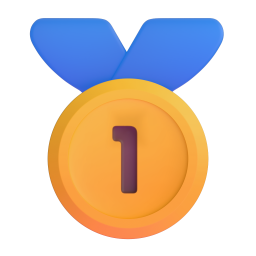
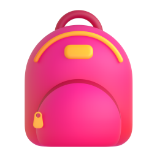
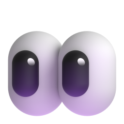
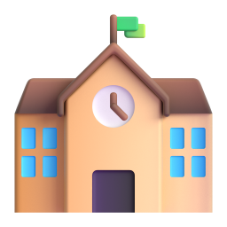
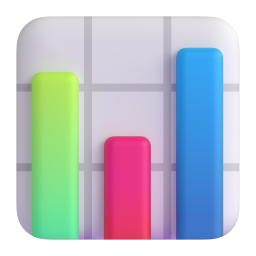
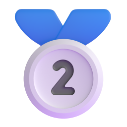
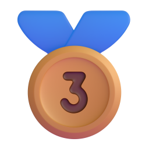
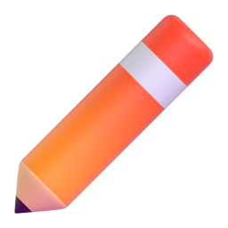

南山中學
新北市中和區・捷運景安站附近離家近、升學實力強，綜合條件最平衡。
- 推薦理由
- 新北私中考上建北人數最多（114 年 69 人），高中部 115 年學測新北第一；有數理、語文實驗班。
- 交通
- 環狀線到景安站約 15～20 分鐘，也有校車。
- 費用
- 每學期約 7.5～9 萬元。
- 入學方式
- 書面審查優先入學＋ 3 月學藝競賽，競賽成績決定分到哪一班。
- 難度
- 中高：普通班約需班級前 20～30%，實驗班約需前 10%。



讀學區的海山國中，還是去考私中？
爸爸、媽媽和孩子一起來看看這份筆記。
點點我們，我們會說話喔！
 竹林卓越營報名截止
2026/11/25（三）中午 12:00
快截止了
竹林卓越營報名截止
2026/11/25（三）中午 12:00
快截止了

忙的話，看完這三點就好
私中主攻南山、裕德、延平其中一所三所離家近、升學表現好，但考試可能在同一天，只能選一所。
11/25 前報名竹林卓越營當保底12/6 營隊剛好當作第一次實戰練習。
明年寒假上短期衝刺班就夠了在班上名列前茅的孩子，不需要報整年的班。

已經有 … 人次來看過這份筆記
兩種學校，放學後的生活差最多
海山國中是「海山高中國中部」，市立完全中學，國中部 87 班。
公私立都一樣要考國中教育會考。

私中能省掉放學走去安親班的麻煩，但要付學費，作息也比較緊。

5 個小問題，選最像你的答案

回答完 5 題，兔兔、倉鼠、貓咪會告訴你，你比較像哪一種冒險家！
測驗只是好玩，幫忙想想自己的喜好。真正要讀哪一間，還是要全家一起討論喔！

哪些學校考上建中、北一女的比例高？
| 學校 | 地點 | 114 年 建中＋北一女＋附中 | 115 年 建中＋北一女 |
|---|---|---|---|
| 靜心 | 台北文山・約 1 小時 | 47 人・24.6% | |
| 裕德推薦 | 土城・緊鄰板橋 | 14 人・13.7% | |
| 延平推薦 | 台北大安・約 40 分 | 31 人 | |
| 南山推薦 | 中和景安・約 20 分 | 38 人 | |
| 板橋中山國中（公立） | 板橋 | 40 人・4.45% | |
| 海山國中部（公立） | 板橋 | 37 人・4.30% | |
| 竹林 | 中和南勢角・約 25 分 | 21 人・9.95% | |
| 光仁 | 板橋・最近 | 沒有公開數據 | 沒有公開數據 |
裕德、延平、南山的升學比例是板橋公立國中的 3～6 倍，但有一部分是因為招進來的學生本來就很優秀。
挑選條件：離板橋近＋升學表現好＋有晚自習或校車

離家近、升學實力強，綜合條件最平衡。

離家最近的高升學比例學校，雙語、小班制。

老牌明星私中，升學穩定，但最難考、通勤最遠。
想要綜合最平衡選南山；想要最近又小班選裕德；想挑戰最難的選延平。
點開問題看答案
教育部規定私立國中不能辦學科考試，所以學校改叫「觀察營」「探索營」「競賽」「甄選」，但孩子一樣要寫國語、英語、數學的題目。
最接近的是南山的書面審查優先入學：交四上到五下成績單、孩子親筆寫的自傳、最多 10 項得獎或檢定證明，通過就先拿到資格，但一定還要參加學藝競賽，沒去就取消。
可加分：科展和語文競賽得獎、數學奧林匹亞、AMC8、全民英檢初級、劍橋 KET 以上、模範生等。
總分 = 五年級成績 × 20% ＋ 營隊表現 × 80% ＋ 多元表現加分（每項 1 分，最多 3 分）
例：成績全優 100 分、營隊 90 分、演講獎狀 1 張 → 100×20% ＋ 90×80% ＋ 1 ＝ 93 分
營隊考國語、英語、數學活動（範圍小一到小六上），前 20% 有 1 萬元獎學金。沒上的話，還有 2027/3/7 的竹林盃。
三所學校都要到現場接受國語、英語、數學評量，在校成績只是加分。

三所推薦學校可能在同一天考試
115 年南山、延平、裕德都在 3/14（六）
116 年很可能也會撞期，只能選一所去考。
竹林 12/23～24 就要報到，比其他學校放榜早。報到前請先問清楚：之後改讀別校，報到費能不能退？
選一所主攻（南山、裕德或延平）＋竹林卓越營當保底。

從現在到明年三月，照順序一步一步來
最近最急的一件事：11/25 中午前報名竹林卓越營。

基礎好的孩子，寒假短期班就夠了
寒假私中入學特訓，附程度檢測報告。
私校入學特訓班、六下數學精修班。
考私中班，一對一，適合加強弱項（例如作文）。
專攻延平等台北私中題型，以延平為目標時可以考慮。
依官網和公開資訊整理，無法確認教學品質，一定要先試聽。報名前記得問：有沒有針對目標學校的題型？一班幾人？寒假班幾堂、多少錢？怎麼退費？
文城和陳立在府中站同一棟樓，一個下午就能兩家一起試聽比較，11 月報名。

聊過的題目點一下，會亮起星星
最重要的是孩子自己想不想去，大人再幫忙算時間和預算。

資料整理於 2026 年 9 月 13 日，招生資訊請以學校官網為準
你收集到全部 9 顆星星，是升國中小勇士！
接下來，跟爸爸媽媽一起決定下一步吧～